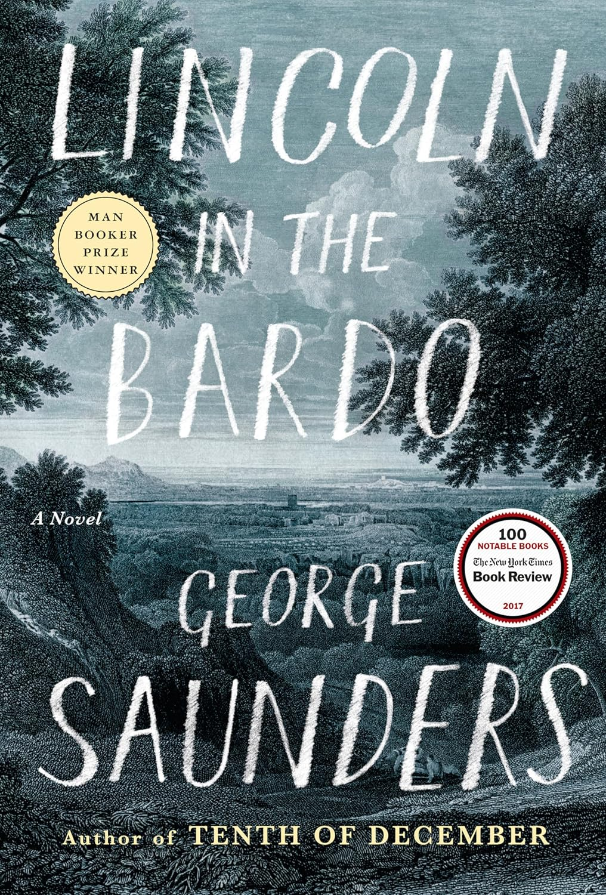

"Lincoln in the Bardo"
- Read on 2025-12-05
- Rating: ️️️️️
- Format: 🎧 (7 hours 25 minutes)
This book wasn't for me. I'd like to think it is simply written for a different audience than me - that I'm not literary-minded enough to keep up with the story amidst the creative presentation of it, or something like that. I felt confused for most of the book (and completely turned off by the crassness of a pair of characters). Willie Lincoln's death had an overwhelming impact on his parents. I wouldn't bother with this book to understand that.